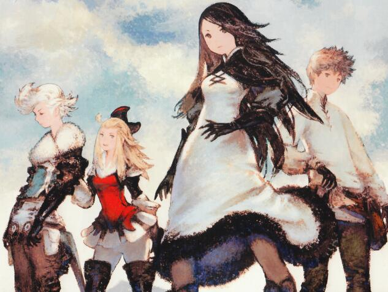
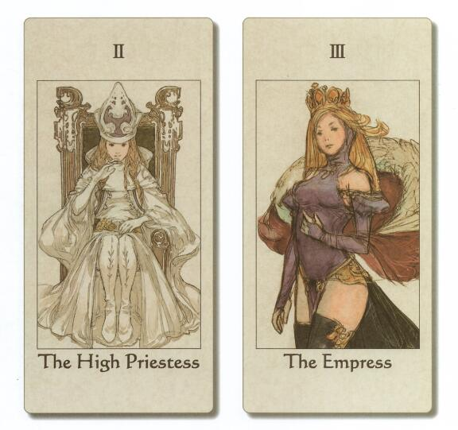
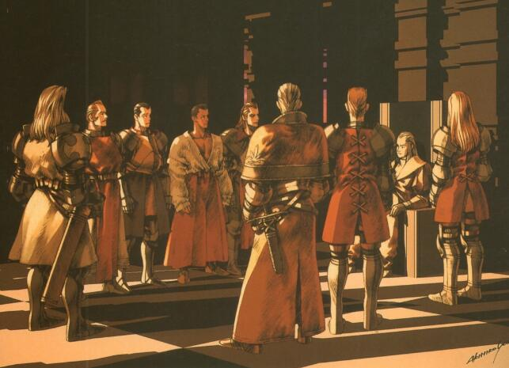
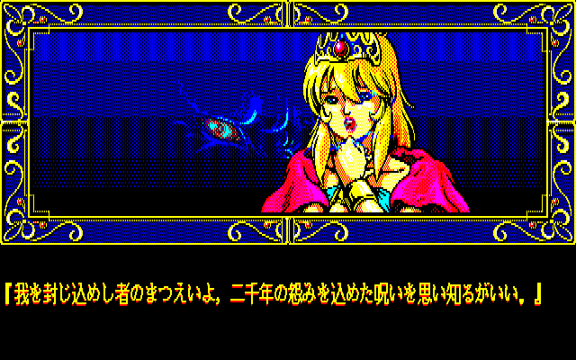
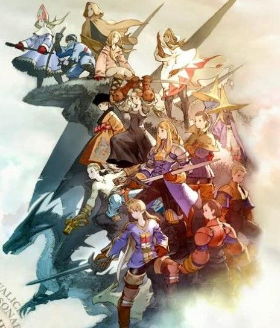
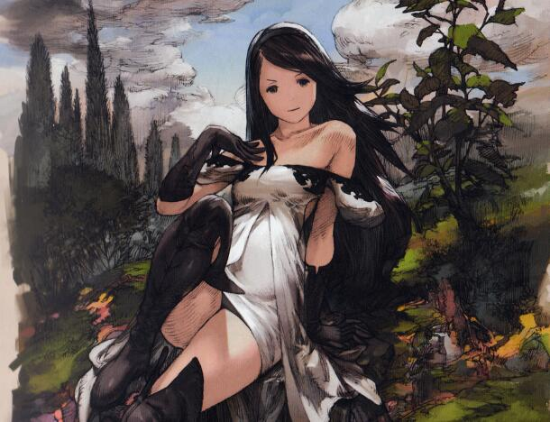
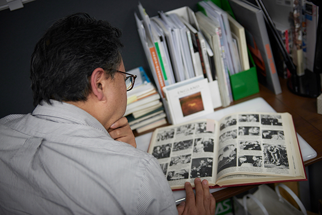
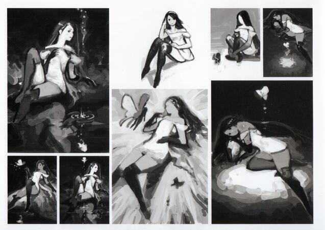

締造悠久的追夢人
——淺談畫師吉田明彥
如果突然間拋出這個名字，想必有些朋友可能還會覺得略陌生。不過手遊玩家應該有所了解，最近大熱的手游《碧藍幻想》的美術工作就是由吉田明彥先生參與的。類似油墨紙的畫面質感以及營造復古感的泛黃色調是其最明顯的風格。手游的人設為了迎合當下環境還是走了萌化性感路線。而吉田明彥先生畫作真正的魅力所在，還得看他所擅長的古典風人設。
大家看到吉田先生的作品時，可能會覺得有一種明顯的“違和感”。他的作品算是日式中畫風比較寫實的一派。除了復古和具有質感的畫面特色，其不同於日式慣有路線的最明顯區別，就在於角色的“眼睛”。在日式人設里，誇張的眼睛比例似乎成了一種約定俗成，而作為一種突出“萌”屬性的大眼特徵多半發生在女性角色上。有人分析過，如果按照現實中的人體器官比例，那麼美女們的腦殼裡有一半的容量都是眼球…可見我們經常說日漫美女“胸大無腦”是不準確的，“眼大無腦”才比較符合（笑）。
不過，這一點在吉田先生的作品裡就不一樣。隨便找一幅吉田先生的作品就能看出，他筆下的角色們不管男女老少高低美醜，其眼睛的比例明顯偏向於正常尺寸，甚至某些人物還有“豆豆眼”的形象。即便是做了萌化的《碧藍幻想》的人設圖，美女們的眼睛比例也要比其它同風格的作品要自然。不知道大家的欣賞口味更偏向於哪一方，但就筆者個人感覺而言，吉田先生的寫實比例比起“大眼萌”顯得角色更加鮮活。

老話說得好，“眼睛is心靈的windows”，一個人物形象最能體現神韻的地方就是眼睛的刻畫。電影電視劇中演員的演技最佳體現處就是眼神，那麼到了動漫藝術里，就得由畫家來完成這一項的勾勒。純粹的“大眼萌”角色雖然容易勾起觀眾的愛憐，但空有大眼的形象也容易造成千人一面甚至“廢萌”的感覺。比如“京都FACE”就是很具有代表性的梗。實際上，但凡具有魅力的畫作都離不開眼睛的出色刻畫。我們不妨轉而看一下另一鼎鼎大名的插畫家TONY大神，其筆下的女性角色以嫵媚動人著稱。而一大魅力評判點就在於他筆下女孩子們的眼神深邃如生、勾人魂魄。諸位可以試試將TONY畫的美女眼睛遮起來，看看是不是妖嬈度大減。這也是其作品手辦化后反而失去神韻的一個因素，畢竟塑料玩具真的很難還原筆墨構造的韻味。
TONY繪製的美女一大特色就是活靈活現的眼神
除了角色眼睛，在人物的身材刻畫上，吉田先生依然自有一番特色。如諸位所知，由於日漫經常以少年少女作為主角，日式畫家的畫風偏向於營造纖細的人物曲線。或者為了迎合萌系造型，經常出現頭大身小但身型還維持頭身比的不合理比例。而吉田先生的繪畫中，人體結構的比例更傾向於歐美風格：人物頭小身大，胸腰臀三處的對比更為突出，卻依舊符合現實。男性角色健壯敦實具有肌肉感，女性角色則強調線條美帶來的性感。特別是對於女性軀體的塑造算是吉田先生的一個執着要素。而因有此特點，先生筆下的女角色不需要過多的減少衣物也能體現身體曲線，即便是包裹嚴實的修女、公主一類莊嚴的角色也能給予觀者符合其身份的美感。在一向比誰露的更多的風氣下，吉田先生用自己的方式闡述了他對女性美概念的理解。當然，這並不能說明先生就是個保守之人。實際上吉田筆下也並不缺露得多的性感美女，魔法師、舞女一類妖嬈類型也是信手拈來。正所謂穿有穿的美，露有露的艷。

雖衣着莊重仍不失女性曲線魅力（《皇家騎士團》塔羅牌）
吉田先生的上色也非常具有辨識度。其作品給人最大印象就是“厚重”且具有歷史感。每一幅場景、每一個物件、每一名角色都似乎帶着自己的經歷站在你的面前。造成這種風格的手法就在於，吉田先生繪畫的前提首先是基於構造好的深厚的文化背景，在此基礎上採用濃厚低沉的上色方式。“鮮艷”二字在先生這裡是不存在的，即便描繪的是陽光沙灘這種明亮風景，他也會抹上一層泛黃使得呈現油畫畫質。畫面的構成以明顯的線條為主，在暗處摒棄了深色處理而採用排線手法刻畫，呈現一種手繪質感，而這種質感非常符合畫作中經常作為主題的西方中世紀的物件。像是皮革縫製的衣物、油布鋪就的桌面、大塊金屬鑄造器具等具有時代感的物品似觸手可得，彷彿並非是畫作將時代展現，而是觀者穿越了時空進入到了那個時間中。一幅畫作就像一本古老的書卷，不需要任何註解和描述，映入眼中的畫面本身，就是一個故事。

撲面而來的歷史感（《皇家騎士團2》）
吉田明彥先生的畫作之所以這麼具有個人特色，和其本身所參與的美術項目是分不開的。或者說，正是因為先生的這種風格，才得以能成功構建他所參與的一系列作品的基調。吉田先生曾經長期就職於史克威爾。雖然已經在2013年離職，但在職期間乃是另一位業界大咖——松野泰已的御用畫師，其厚重深邃的畫風，與松野泰已構建的“伊瓦利斯系列”世界觀極為吻合。說到這裡大家或許就應該明白，在吉田先生這裡經手的都是何等大作了。《皇家騎士團》系列、《最終幻想戰略版》系列、《放浪冒險譚》、《最終幻想XII》、《勇氣默示錄》系列、《尼爾機械紀元》等，包括今年的《八方旅人》都有先生不同程度的參與。
雖然吉田先生的畫作頗具歷史感，但其本人並沒有作品那麼滄桑。出生於1967年的吉田明彥就現在的年歲來說還可以稱作“中生代”，其真正開始嶄露頭角也是在90年代後期。實際上早在1990年，吉田先生就接手了一款FC平台的RPG《武藏的冒險》中的怪物設定，也為另一款DOS平台遊戲《Zeliard》（中文名為《神劍封魔》）做過美術設計。

1990年的《Zeliard》 其風格已可見一斑
SFC平台的戰棋類大作《皇家騎士團》由其設定人物和背景，個人特色開始逐漸顯現。《皇家騎士團》的故事走的是史詩小說風，劇情直面沉重的政斗和武鬥，揭露戰爭中扭曲的人性，展現在動蕩的世界中小人物們的無奈沉浮。吉田那自帶滄桑感的設計簡直可以說是與其不謀而合。傳說中的SQUARE三大惡女之一的卡秋婭就是出自這部作品。
而1997年於PS平台首發的《最終幻想戰略版》才算是吉田先生真正意義參與到美術項目中的作品，頗具風格的畫風從這裡開始被廣為人知。《最終幻想戰略版》的劇情一改以往系列的機械朋克冒險風格，講述了一個家國天下和親友愛情之間糾結的戰爭故事。實際上不管是作品主題還是系統構造，都與《皇家騎士團》頗有相似之處。雖然最終結局稍顯倉促，卻依舊能很好地體驗由吉田的美術風格為玩家營造出的，彷彿真的存在於史書中的那個世界。

《最終幻想戰略版》可說是吉田先生的真正首秀
而在2000年的PS平台滿分作品《放浪冒險譚》里，吉田先生除了做美術設計還參與到了實機開發中，親自將遊戲中的多邊形建模進行調試。這部作品裡呈現出的躍然紙上的中歐風格，吉田先生的手筆功不可沒，不過華美的背後也是付出的大量辛勞。當時的技術還達不到直接將設定圖變成建模的水準，多邊形的質感又和紙面作畫完全不同。基本上都是邊製作邊調試，最終成品已經和初期設定圖大相徑庭，吉田先生等於是做了兩次的設計。《放浪冒險譚》的劇情依舊晦澀。不僅描述了多方勢力勾心鬥角的角逐，在主角身上更是暗示了其具有精神創傷、心理障礙等特徵，並作為遊戲系統中的一個要素體現，其思想可謂超前。這種略顯壓抑陰暗的設定，也是“吉田畫風”的優秀髮酵土壤。
到了PS2的《最終幻想12》，吉田先生監修了大部分的背景建模，其描繪範圍已經從《放浪冒險譚》的小規模建築群擴大到整個大陸環境，在這裡把自己的風格發揮到了極致。同樣分屬於“伊瓦利斯世界”的大型網游《最終幻想14》也自然由其進行設計。如果說松野泰已是“伊瓦利斯世界”的概念構建者，那麼吉田明彥就是將其具現化的創造執行者。直到2013年離職之前，吉田先生在SE社內所負責的最後一部作品乃是深受玩家好評的3DS平台傳統回合制RPG《勇氣默示錄》。此遊戲無論是畫風、劇情還是系統，甚至是製作班底的延續，都可以視作為《八方旅人》的前身。

十分好認的“吉田style”（《勇氣默示錄》阿尼婭斯）
不難看出，但凡吉田先生參與的作品，其故事主基調必然是沉重滄桑的。由於筆下人物多健壯身材，對女性的刻畫相對保守但又不失嫵媚，加上線條手法和繪卷質感，中世紀的戰爭史詩這類題材，對於畫風的展現最為合適。但吉田先生也沒有疏於對當下流行要素的把握。比如兩年前的劇情派ARPG神作《尼爾：機械紀元》里，玩家群中一致好評的主人公小姐姐的白色打底體操服，就是吉田靈機一動的結果。這樣來看的話吉田先生也是有點“老不正經”呢（笑）。如若把“2B小姐姐”的立繪和《皇家騎士團》的角色立繪放在一起說這是同一人的作品，恐怕會讓觀眾懷疑人生。不過我們前面說過，“性感”只是吉田先生畫作的其中一個要素。去看一下他繪製的《尼爾：機械紀元》的封面圖和海報，就能體會到那股彷彿經歷了久遠時間的氣息撲面而來，已經成為其創作靈魂不可分割的一部分。
一旦涉及到場景描繪就風格畢現
對於自己的創作職業，吉田明彥可以說是具有“禪意”的人。早在涉入遊戲製作之前，吉田先生從事着普通的平面設計工作，但自己心裡想做的其實是“繪畫”，夢想是成為插畫師或者漫畫家。在當時這項職業的發展前途比較坎坷，自覺難以果腹的吉田先生看到了遊戲公司招人的廣告。那時候的他對遊戲並不是很感興趣，只是覺得“這裡可以讓我畫畫”就去應聘了。雖然說各路名人大佬不經意的隨性而為或可成就神話，回頭看看吉田先生走上職業道路的起源，也實在是未免太隨性了點。然而，隨性進入的這家公司便是日後創造大名鼎鼎的《皇家騎士團》系列的Quest，只能說一切都是偶然造就的必然。
當然，那個時候還沒有大作登場，新入社的吉田也只能接到一些小作坊作品的雜活。由於年代所限，工作要求設計師直接畫出角色的像素圖，和吉田所想象的“美術設計師”還是有所差別的。而在當時，遊戲行業里壓根就沒有設計師這種職位，封面和插畫都交給外包製作。但是外包的質量也參差不齊，於是吉田動了個念頭：還不如我們自己畫。這個想法也促成了他的職業轉型。以此為契機，吉田先生走上了遊戲美術的道路。
吉田先生不喜歡繪畫之外的雜項來干擾自己
談到離開SE的原因時，吉田先生提到一個問題就是“在工作中開發遊戲佔用的時間遠大於畫畫”。為了準確還原原作的風韻，開發工作中的很多建模都需要他親自調整，創作時間反而大大縮短。像是前文提到《最終幻想12》的設計工作，實際上純粹的繪畫只佔了很短的時間，絕大部分時候都在調試建模和場景，這是與他本人曾經追求的工作精神不相稱的。所以思考再三，吉田先生決定辭去SE的職位，參與到CyDesignation工作室以個人的名義接受創作，不再參與遊戲程序部分的開發，希望能將更多的時間和精力放在繪畫本身這件事上。而參與工作室的原因也是因為受到社長“召集共有價值觀的同伴深入參與到項目中才能提高設計完成度”這個理念的共鳴。
吉田先生的“禪意”還體現在諸多方面。在當下大多數畫師都採用電腦和數位板繪畫的時候，吉田依然還保留着手繪的習慣。鉛筆和橡皮擦這種頗具年代印記的工具，在吉田先生手裡竟然意外的合拍。
傳統的畫具流露出大師的做派
在閑時，吉田先生喜歡賞畫，除了遊戲相關的畫冊，在其他創作方面也多有涉獵。例如購入了很多名家畫冊和外國時尚雜誌，由於是作為個人收藏，先生沒有讓公司出錢而是自掏腰包。吉田認為，當下有些東西無法在遊戲中展現出來是因為技術限制，將來或許有一天可以實現。像是現在利用動作捕捉、實景渲染這些技術來開發場景，遊戲的成品和照片甚至真人相差無幾的這些技術，在製作《放浪冒險譚》的當年也是不可想象的。為了能夠跟得上未來的技術發展，吉田積累了很多遊戲之外的創作知識，相信終會有派得上用場的時候。堅守古典的同時又不忘放眼未來，這種同時兼顧當下和遠見的廣闊眼光，已然可稱為“大師風範”了。

吉田先生一直保留着《放浪冒險譚》的設定稿
在美術創作道路上走過近三十個年頭，已經年屆五十的吉田明彥先生依然活躍在設計的第一線。回首歲月，吉田先生的經歷可謂是對“追夢”的最佳詮釋。實際上，先生雖畫作頗豐，其曝光度卻要低於同級別的很多作家。在媒體上你可以輕易搜到吉田先生的作品，但對於其個人的評價和自傳可謂微乎其微。或許對於一名全身心都投入到藝術創作的人來說，這樣的生活方式可能才是最合適的。我們也確實看到，吉田先生為了堅持繪畫而放棄了很多，但從他現在的生活來看，放棄掉的那些或許才讓他得到了更多希望中的事物。也許在吉田先生眼裡，將“繪畫”這件事本身做到心目中的最佳標準，就是對自己的職業最大的尊重，對自己當年的夢想最好的堅守。
就讓我們祝願吉田先生的會社和事業能夠蒸蒸日上，在遊戲中為大家描繪更多的幻想，將自己的那份初心，一直延續到夢的彼方。
TO：締造悠久的追夢人—吉田明彥（Akihiko Yoshida）

聲明： 專欄所有投稿文章僅代表作者本人意見，不代表本欄目立場
本系列版權歸輕之文庫所有，未經許可禁止一切形式轉載
文章配圖來源網絡，如有疑問請聯繫我們
輕之文庫專欄 Vol.1
輕之文庫專欄是為輕小說創作者提供的一個知識與信息交流欄目。
主要交流圍繞輕小說產業與內容創作領域，覆蓋泛二次元相關領域，希望藉助這個平台可以博採各家之所長，探討產業發展、作品解析以及內容創作的運作規則。給輕小說創作者提供有價值的參考資料，為整個創作環境的改善添磚加瓦。